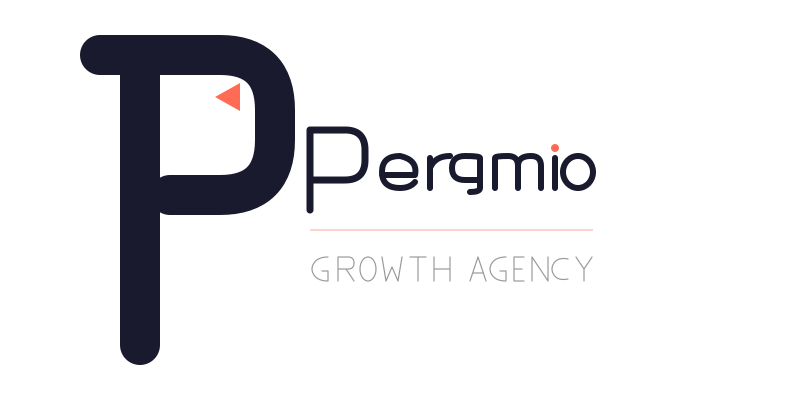
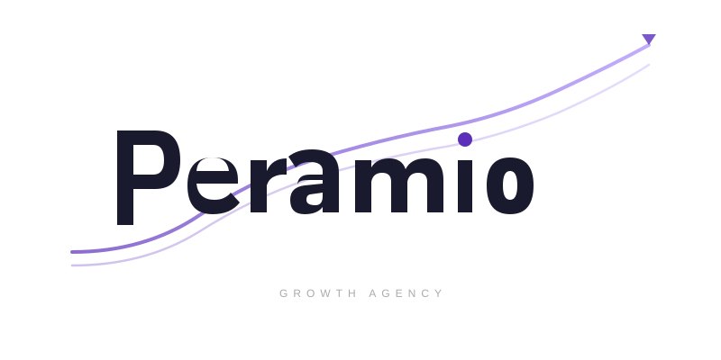
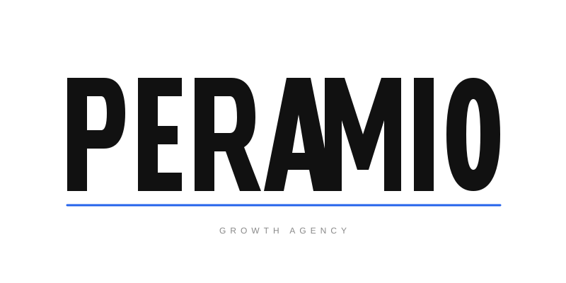
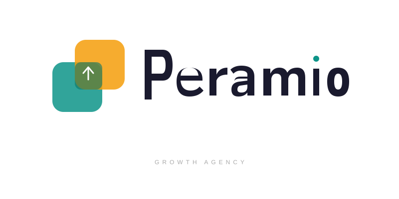
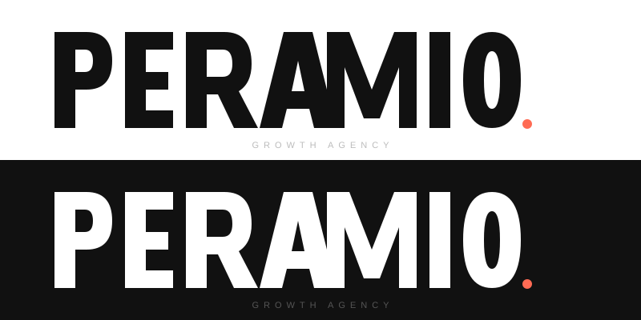

Logo Konseptleri v2 — Araştırma Bazlı

Kalın, geometric P harfi — rounded terminaller, modern stroke. P'nin iç boşluğunda coral renkli yukarı yönlü ok, büyüme vaadini negatif alanda taşıyor. i noktası accent renkte. Favicon olarak tek başına P çalışır.
HubSpot sprocket & Amplitude wave ilhamı

Mor-lavanta gradient dalga eğrisi wordmark'ın arkasından geçiyor — sürekli yükselen büyüme grafiği. Path olarak çizilmiş custom geometric harfler, bold ama refined. Dalga sonunda küçük ok detayı.
Amplitude wave identity ilhamı

Tamamen büyük harfle cesur PERAMIO wordmark. A harfinin üçgen counter'ı doğal bir yukarı ok okuması veriyor — keşfedilmeyi bekleyen gizli sembol. Elektrik mavisi accent çizgi. Siyah üzerine sert, monumental duruş.
FedEx hidden arrow & Spartan Golf Club ilhamı

Üst üste binen iki rounded kare — teal ve amber. Kesişim alanı dönüşümü simgeliyor, içinde beyaz ok. Premium SaaS estetiği. Yanında light-weight path harflerle Peramio wordmark. i noktası teal accent.
Stripe / Notion / Mastercard overlap ilhamı

Tamamen özel çizilmiş PERAMIO — kalın, geometric, monumental. P bowl'u mükemmel daire, A tepesi düz kesim (flat apex). Hem açık hem koyu arka plan versiyonu. Coral accent nokta. Sembol gerektirmeyen, kendi başına yeten wordmark.
2026 bold minimalism & custom lettering trendi